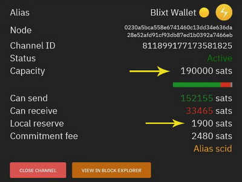

Antes de comenzar a usar Blixt Wallet, es una buena idea familiarizarse con los términos, procedimientos, funciones, etc.
Es una buena idea comenzar a leer y obtener algunos conocimientos básicos sobre LN y cómo usarlo; de lo contrario, será difícil para usted, como nuevo usuario, comprender qué está haciendo con Blixt Wallet como una billetera de LN de nodo.
Aquí tienes algunos recursos para empezar a aprender (en ingles):
En primer lugar, expliquemos algunos aspectos POR QUÉ no se sincroniza, para que el usuario pueda comprender la situación:
Entonces, ¿qué puedes hacer?
1. Blixt Wallet en sí no cobra ninguna tarifa por el uso de la aplicación.
2. El uso de Lightning Network (LN) no es gratuito. Esto es un mito. Incluso si el costo de usar LN es realmente pequeño, hay un costo y algunos usuarios también verán ese costo.
3. Abrir y cerrar canales en LN tienen un costo. y a veces no es barato. Depende también de la tarifas de minero en el momento de abrir un canal LN. A veces puede ser alto, a veces puede ser realmente barato. Usuarios primero debe aprender acerca de cómo funcionan estas cosas. Aquí está una guía simple sobre las tarifas de mempool. Aquí está otro guía sobre tarifas de LN.
Es un nuevo usuario de Blixt Wallet y acaba de instalar la aplicación, no tiene fondos depositados en la billetera.
Consideremos que elige usar el servicio Dunder LSP (vea aqui cómo funciona y qué es LSP), solo para depositar 100k sats en su billetera Blixt LN.
En el momento en que el servicio LSP reciba su depósito de 100k, utilizará esos 100k sats para abrir un canal de 400k (la cantidad puede variar, ver aquí más detalles) hacia tu billetera. Entonces tendrá 100k sats como liquidez de salida y una liquidez de entrada de 300k sats. Pero esa apertura tiene un costo: tarifas onchain para el tx y también una tarifa de compromiso (reserva que se mantiene para cerrar el canal). Vea más detalles sobre las tarifas de compromiso aquí: Link 1 - Link 2 - Link 3.
"He abierto un canal de 500k sats, pero no puedo usar más de 495k sats, dice saldo insuficiente. ¿Por qué?"
Otro aspecto a tener en cuenta es la "reserva de canales". Si vas a tu Blixt - cajón superior - Lightning Channels verá en los detalles del canal que se menciona cuánto es la reserva del canal.

Una reserva de canal es una cantidad que cada participante del canal reserva para asegurarse de que ninguno tiene "nada en juego". si se produce un intento de trampa.
Esta reserva (normalmente el 1% del importe total del canal) no se puede gastar y se reserva durante toda la vida útil del canal. Las reservas de canales hacen que los intentos de hacer trampa sean menos económicos. Cuando una parte del canal intenta engañar a la otra y son atrapados, se puede usar una transacción de penalización para robar bitcoins a todas las partes infieles como castigo. Las reservas de canal hacen que los intentos de trampa siempre tengan algo en juego, lo que hace que sea menos probable que ocurra.
Blixt Wallet utiliza la implementación del nodo Lightning lnd y el Bitcoin SPV client Neutrino directamente en el móvil. Lnd ha sido configurado para funcionar bien en dispositivos móviles.
Ten en cuenta que Blixt Wallet es un nodo Lightning, con canales LN como cualquier otro nodo. Eso significa que en Para poder realizar transacciones en LN, debe estar en línea, conectado, en el momento de la transacción. Si lo haces no realizar transacciones, no es realmente necesario permanecer en línea. Blixt, una vez abierto, tardará unos minutos en volver a sincronizarse los últimos bloques a través de SPV Neutrino y volverá a estar en línea. Por otro lado, para realizar transacciones en cadena (no LN) no es necesario estar en línea.
RECORDAR:
La propia Blixt Wallet ofrece canales de apertura, utilizando dos métodos opcionales, hacia Blixt Node Server:
Proveedores de liquidez entrante: Blixt también ofrece un enlace directo, en el monedero, a LNBig y Bitrefill (Thor). Simplemente vaya a la configuración, seleccione "Servicios de canales entrantes", seleccione el nodo deseado y simplemente siga las instrucciones proporcionadas. Esos se usan solo cuando necesita más liquidez "INBOUND".
Canales abiertos con cualquier nodo. Como hemos señalado, recomendamos elegir sabiamente a sus compañeros. Blixt es un monedero LN de gasto rápido, recomendamos encontrar una con tarifas bajas o incluso cero. También mira en esta comunidad de Amboss de tarifa base cero o muchas otras comunidades de nodos. Recuerda, tu Blixt Wallet necesita pares bien posicionados y tarifas bajas, para que tus pagos sean rápidos y económicos.
Un nodo muy popular que ofrece "enrutamiento de tarifa cero" es el ZFR node. Sugerimos no abrir pequeños canales pequeños como 20k sats. Si ya decidiste usar un nodo como este como peer, al menos abre un 400-500-600k sats para tener suficiente para tus pagos y también cubrir las reservas y costos. Los canales más pequeños no son eficientes para ambos pares.
También es una muy buena práctica abrir canales con aquellos comerciantes/servicios que paga con frecuencia. Abrir un canal con tu comerciante favorito también puede traerte 0 tarifas, por ese canal directo y es como una "línea de crédito". De todos modos, puede usar ese canal para pagar también a otros comerciantes/servicios, solo tenga en cuenta sus tarifas por enrutar su pago, porque si no hay un pago directo, su nodo tendrá que enrutar su pago al siguiente salto hasta el destino y que implican un costo.
Blixt, de hecho, es un nodo LN, pero no es un nodo de enrutamiento, es más como un nodo LN privado.
Todos los canales de Blixt son privados, lo que significa que no son "visibles" para los demás nodos de enrutamiento de la red. Estos son los llamados canales "no anunciados", utilizados solo para pagos privados.
Su nodo Blixt LN puede recibir y enviar pagos, utilizando otros nodos como saltos, pero no puede enrutar otros pagos a través de su nodo Blixt.
Por eso Blixt es tan especial... nadie sabe de tus pagos. Consulte este breve tutorial sobre el enrutamiento onion en LN
Para extraer su código nodeURI/QR para compartir/escanear, vaya al cajón superior izquierdo, presione la sección "Avanzado" y luego abra la opción "Experimento Keysend". El pagador, solo tiene que escanear ese código QR y pagar.
Pero se deben cumplir algunas condiciones como:
Para enviar DESDE tu Blixt Wallet a otro nodo a través de claves y, solo tienes que escanear la clave pública QR de otro nodo, poner el monto y hacer clic en enviar.
En Configuración -> Bitcoin -> Establecer nodo de Bitcoin puede ingresar un nodo de bitcoin para conectarse
Debes asegurarte que el puerto P2P de Bitcoin (8333) es reenviado por su router. Puede conectarse a su nodo a través de su IP LAN local, clearnet o dirección Tor onion.
La indexación del filtro compacto BIP157 debe estar habilitada para su nodo, agregue esto a su bitcoin.conf, si aún no está configurado:
blockfilterindex=1
peerblockfilters=1
Blixt Wallet es un nodo de lightning completo en sí mismo. No es posible conectar y controlar un otro nodo remoto.
En lugar de controlar su nodo privado, habilite Tor y abra un canal hacia él.
REGLA N.° 1: siempre debe haber hecho una copia de seguridad del canal y guardarla en un lugar seguro (p. ej., administrador de contraseñas). Si hiciste eso, el procedimiento es simple y tienes dos formas (rápida y lenta) y también dos situaciones a tener en cuenta (tenía fondos en cadena o no).
REGLA N.º 2: nunca use una copia de seguridad completa de un dispositivo como copia de seguridad restaurada para billeteras BTC/LN. Esto puede terminar en perder fondos, al transmitir un estado incorrecto de los canales.
NOTA N° 1 - Migración (o procedimiento de restauración de fondos) significa crear una nueva ID de Nodo y mover los fondos restaurados a eso. Este es un mejor procedimiento para la privacidad, la seguridad de los fondos y la forma más fácil.
NOTA N.° 2: si aún tiene el DISPOSITIVO original en funcionamiento y en línea con fondos en los canales de LN, NUNCA lo haga el procedimiento de restauración en un nuevo dispositivo con opciones de restauración de canales. Esta acción obligará a cerrar los existentes canales y podría recibir una penalización por eso (transmitiendo el doble del estado de los canales). Puede restaurar en otro dispositivo, manteniendo el original aún abierto, SOLO la billetera / semilla en cadena, pero nunca coloque la copia de los canales.
NOTA N.º 3: después de iniciar el proceso de restauración y si no ve en el menú "Lightning Channels" que el antiguo los canales entran en el estado "cerrando" y no están allí, es seguro comenzar de nuevo el proceso para restaurar del archivo de copia de seguridad. No es necesario volver a empezar desde cero con la restauración en cadena. Si su billetera en cadena está restaurada y los fondos están de vuelta, está bien, simplemente continúe con la restauración de los canales de LN.
NOTA N.º 4: si restaura canales LN que estaban abiertos mediante la red Tor, ANTES de iniciar la restauración proceso, ve a la esquina superior derecha y activa Tor. De esa manera, su nodo Blixt podría "ver" los pares Tor y iniciar el procedimiento de cierre de forma normal.
Condiciones:
Procedimiento:
Condiciones:
Procedimiento:
Bien, tenía un nodo anterior muerto y usé el procedimiento de restauración, usando el archivo de canales de respaldo SCB en Blixt. Espero a que se cierren los canales, pero los fondos no vuelven a mi billetera en cadena. ¿Que puedo hacer?
Por lo general, hay pocos escenarios posibles para cerrar canales:
Una vez que todos los canales hayan iniciado el "cierre", espere pacientemente. Este proceso lleva tiempo. Si ve que en mempool el tx ha liberado los fondos, verifique en su billetera onchain. Si los fondos aún no están allí, significa que la billetera lnd debe volver a escanear las direcciones anteriores y actualizar el historial de la billetera. Algunos UTXO están vinculados a "salidas de anclaje", por lo que es más complicado volver al onchain, depende uno del otro.
Entonces, cuando vea que todos los canales están cerrados, vaya a Blixt - Configuración - hasta la última sección que dice "volver a escanear billetera". Actívelo y reinicie la aplicación (si no lo hace automáticamente).
Solo cuando se inicia el lnd, se vuelve a escanear. Sea paciente y compruebe los registros de lnd (ver también en Ajustes - Registros de lnd). Allí leerá cómo está escaneando un montón de bloques a la vez en busca de sus direcciones restauradas. Una vez finalizado el proceso, debería ver los fondos en cadena.
Intenta mantener activa la aplicación Blixt durante este proceso. Si se interrumpe, deberá reiniciar nuevamente para activarlo.
NOTAS IMPORTANTES A CONSIDERAR (sobre cómo se mueven los fondos de LN):
En este caso, al tener solo un canal abierto con su propio nodo, deberá ajustar un poco su nodo.
Y hemos encontrado estas opciones que ayudarán a su Blixt a "comunicarse" mejor con su nodo de inicio.
Vaya al archivo lnd.conf de su nodo de inicio y agregue estas líneas:
al final de la sección [Application Options]
numgraphsyncpeers=9
ignore-historical-gossip-filters=false
en la sección [routing]
routing.strictgraphpruning=false
en la sección [gossip] (crealo al final si no lo tienes)
gossip.max-channel-update-burst=20
gossip.channel-update-interval=1m
Siempre recomendamos tener más de un canal abierto y no solo con el mismo par, sino con diferentes nodos de pares. Como lo explicamos en esta sección.
Tengo un canal con un nodo par que quiero cerrarlo / par anunció que cerrará su nodo.
Me gustaría tener el mínimo impacto posible sobre mi saldo restante y pagar tarifas mínimas.
La respuesta simple es tener un "cierre colaborativo", así que siga este procedimiento:
Listo. Esto cerrará el canal con costos mínimos en tarifas y también la reserva del canal se devolverá a su dirección en cadena.
Si desea un "cierre forzado" del canal, en caso de que el compañero ya esté cerrado, no responda, luego, en lugar de un simple clic en el botón rojo, presione prolongadamente el mismo botón y luego el mensaje emergente contendrá las palabras "¿Quieres FORZAR EL CIERRE de este canal?" e impulsará el cierre con una tarifa más alta.
RECUERDE: este trámite tardará más en ser confirmado, debido a un tiempo de bloqueo del tx de cierre, en caso de que se apliquen sanciones. Podría tomar hasta 144 bloques, aproximadamente 2 semanas, pero no más.